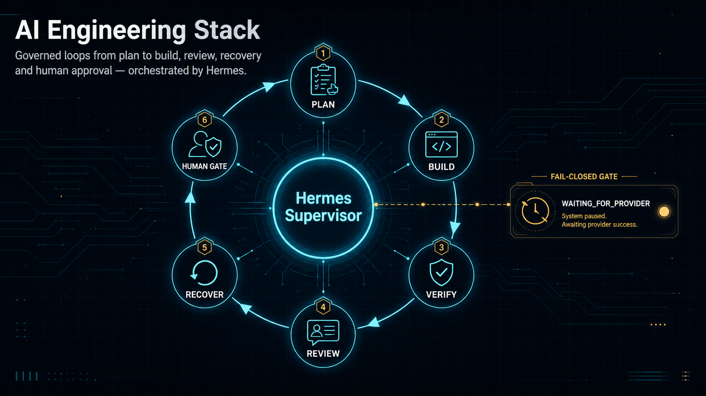

MEMORY
Append-only ledger
Events and run evidence accumulate without rewriting history.
PUBLIC PROFILE / HERMES SUPERVISOR
I design AI engineering systems that plan, build, verify, review, recover, and leave evidence behind. Hermes keeps the loop moving; people keep consequential decisions in their hands.

01 Hermes orchestrates
02 Every loop leaves evidence
03 Human gates stay explicit
THE OPERATING RHYTHM
Loop Engineering keeps each run bounded. The next action is machine-readable, the evidence is durable, and a provider limit pauses an attempt without losing the logical run.
The canvas is an explanatory layer, not the source of truth.
Turn intent into an approved, reviewable scope.
Implement one bounded action with the smallest useful context.
Run deterministic checks and preserve their evidence.
Let an independent reviewer define the next valid loop command.
Wait fail-closed, then continue the same run with a new attempt.
Loop Engineering reference: cobusgreyling/loop-engineering.
THE CONTROL PLANE
Hermes reads the durable state, dispatches the next permitted role, prevents duplicate work, and stops at a human gate for external, destructive, financial, legal, or production-facing effects.
Read the public architectureARCHITECTURE, NOT THEATER
Each capability has a place in the loop: durable memory, explicit transitions, safe boundaries, and proof that can survive a restart.
MEMORY
Events and run evidence accumulate without rewriting history.
BOUNDARIES
Valid transitions make waiting, review, and completion observable.
SAFETY
Provider limits and consequential actions stop safely instead of guessing.
ACCESS
Connectors stay least-privilege; hooks protect secrets and protected actions.
HUMANS
Telegram gates bind a person to one exact, expiring action.
CONTINUITY
A fresh worker can continue from the repository, not from chat history.
THE WORKFORCE
Claude Code, OpenAI Codex, specialized skills, MCP connectors, and guardrail hooks each get the smallest useful context. The repository remains the source of truth.
DISCOVERABLE BY DESIGN
Public explanations are short, specific, and citable. The machine-readable layer describes the same stack as the human page: no inflated claims, no hidden context.
GEO reference used for the content modelHermes is a durable-state supervisor for bounded AI engineering loops: it routes the next action, preserves evidence, waits fail-closed on provider limits, and asks a human before consequential effects.
A repeatable cycle of plan, build, verification, independent review, and targeted improvement. It ends in verified completion, a human gate, or a documented stop.
The logical run remains open in a normalized waiting state. After the documented reset, Hermes resumes with a new attempt instead of losing the run or storing raw provider output.
The repository contains the English profile, German README, capability map, skills, setup instructions, and public source links.
HUMAN GATE / MOBILE
When an action is externally visible, destructive, legal, financial, or difficult to reverse, Hermes pauses. A phone approval is bound to the exact action, expires, and leaves evidence.
PUBLIC BY CHOICE
Stars help other builders find a public, privacy-safe reference for governed AI engineering. Access stays open either way.